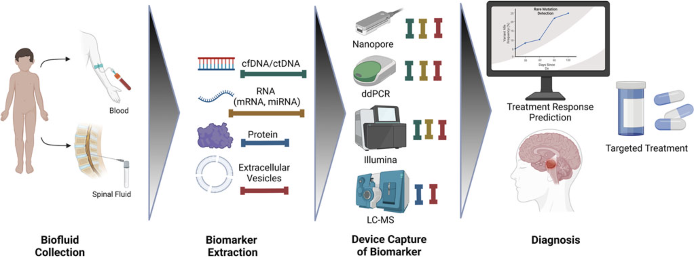
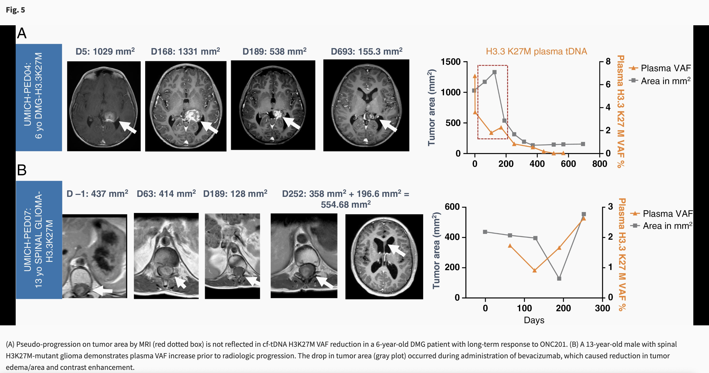

Gallery



My Publications
-
Liquid biopsy in pediatric brain tumors: Malignant primary brain tumors are the most common cancer in children aged 0–14 years, and are the most common cause of death among pediatric cancer patients. Compared to other cancers, pediatric brain tumors have been difficult to diagnose and study given the high risk of intracranial biopsy penetrating through vital midline structures, where the majority of pediatric brain tumors originate (Ostrom et al., 2015). Furthermore, the vast majority of these tumors recur. With limitations in the ability to monitor using clinical and radiographic methods alone, minimally invasive methods such as liquid biopsy will be crucial to our understanding and treatment. Liquid biopsy of blood, urine, and cerebrospinal fluid (CSF) can be used to sample cfDNA, ctDNA, RNA, extracellular vesicles, and tumor-associated proteins. In the past year, four seminal papers have made significant advances in the use of liquid biopsy in pediatric brain tumor patients (Liu et al., 2021; Cantor et al., 2022; Miller et al., 2022; Pagès et al., 2022). In this review, we integrate the results of these studies and others to discuss how the newest technologies in liquid biopsy are being developed for molecular diagnosis and treatment response in pediatric brain tumors.
[Read Paper]
-
Cell-Free Tumor DNA (cf-tDNA) Liquid Biopsy: Current Methods and Use in Brain Tumor Immunotherapy: Gliomas are tumors derived from mutations in glial brain cells. Gliomas cause significant morbidity and mortality and development of precision diagnostics and novel targeted immunotherapies are critically important. Radiographic imaging is the most common technique to diagnose and track response to treatment, but is an imperfect tool. Imaging does not provide molecular information, which is becoming critically important for identifying targeted immunotherapies and monitoring tumor evolution. Furthermore, immunotherapy induced inflammation can masquerade as tumor progression in images (pseudoprogression) and confound clinical decision making. More recently, circulating cell free tumor DNA (cf-tDNA) has been investigated as a promising biomarker for minimally invasive glioma diagnosis and disease monitoring. cf-tDNA is shed by gliomas into surrounding biofluids (e.g. cerebrospinal fluid and plasma) and, if precisely quantified, might provide a quantitative measure of tumor burden to help resolve pseudoprogression. cf-tDNA can also identify tumor genetic mutations to help guide targeted therapies. However, due to low concentrations of cf-tDNA, recovery and analysis remains challenging. Plasma cf-tDNA typically represents <1% of total cf-DNA due to the blood-brain barrier, limiting their usefulness in practice and motivating the development and use of highly sensitive and specific detection methods. This mini review summarizes the current and future trends of various approaches for cf-tDNA detection and analysis, including new methods that promise more rapid, lower-cost, and accessible diagnostics. We also review the most recent clinical case studies for longitudinal disease monitoring and highlight focus areas, such as novel accurate detection methodologies, as critical research priorities to enable translation to clinic.
[Read Paper]
-
Serial H3K27M cell-free tumor DNA (cf-tDNA) tracking predicts ONC201 treatment response and progression in diffuse midline glioma: To our knowledge, we report the first demonstrated feasibility for serial CSF collection in a prospective high-grade glioma clinical trial. Nonrecurrent patients (those enrolled after initial radiation) with a decrease in CSF H3.3K27M variant allele fraction (VAF) displayed a doubling of time to progression. “Spikes” in cf-tDNA VAF (increase of at least 25%) preceded progression in many cases. In individual cases, patterns of change in VAF over time demonstrate additional clinical utility in terms of differentiating pseudo-progression and bevacizumab (“pseudo-response”) effect. These findings represent a new direction for understanding the feasibility and utility of H3K27M cf-tDNA as a clinically relevant prognostic marker.
[Read Paper]
-
Ultra-rapid somatic variant detection via real-time targeted amplicon sequencing: Molecular markers are essential for cancer diagnosis, clinical trial enrollment, and some surgical decision making, motivating ultra-rapid, intraoperative variant detection. Sequencing-based detection is considered the gold standard approach, but typically takes hours to perform due to time-consuming DNA extraction, targeted amplification, and library preparation times. In this work, we present a proof-of-principle approach for sub-1 hour targeted variant detection using real-time DNA sequencers. By modifying existing protocols, optimizing for diagnostic time-to-result, we demonstrate confirmation of a hot-spot mutation from tumor tissue in ~52 minutes. To further reduce time, we explore rapid, targeted Loop-mediated Isothermal Amplification (LAMP) and design a bioinformatics tool—LAMPrey—to process sequenced LAMP product. LAMPrey’s concatemer aware alignment algorithm is designed to maximize recovery of diagnostically relevant information leading to a more rapid detection versus standard read alignment approaches. Using LAMPrey, we demonstrate confirmation of a hot-spot mutation (250x support) from tumor tissue in less than 30 minutes.
[Read Paper]